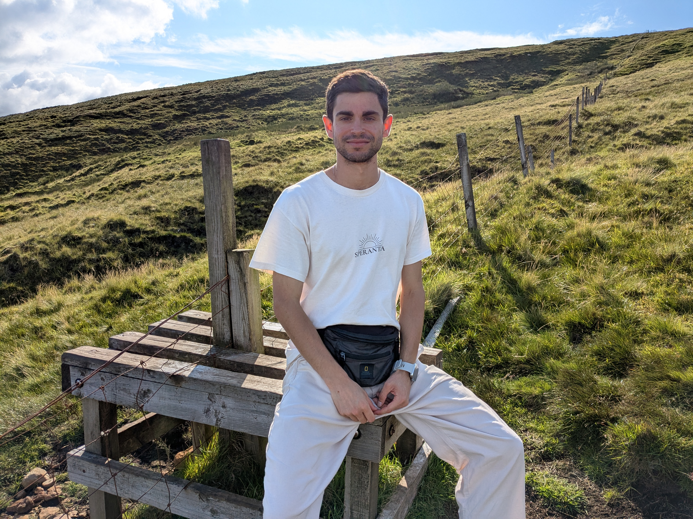
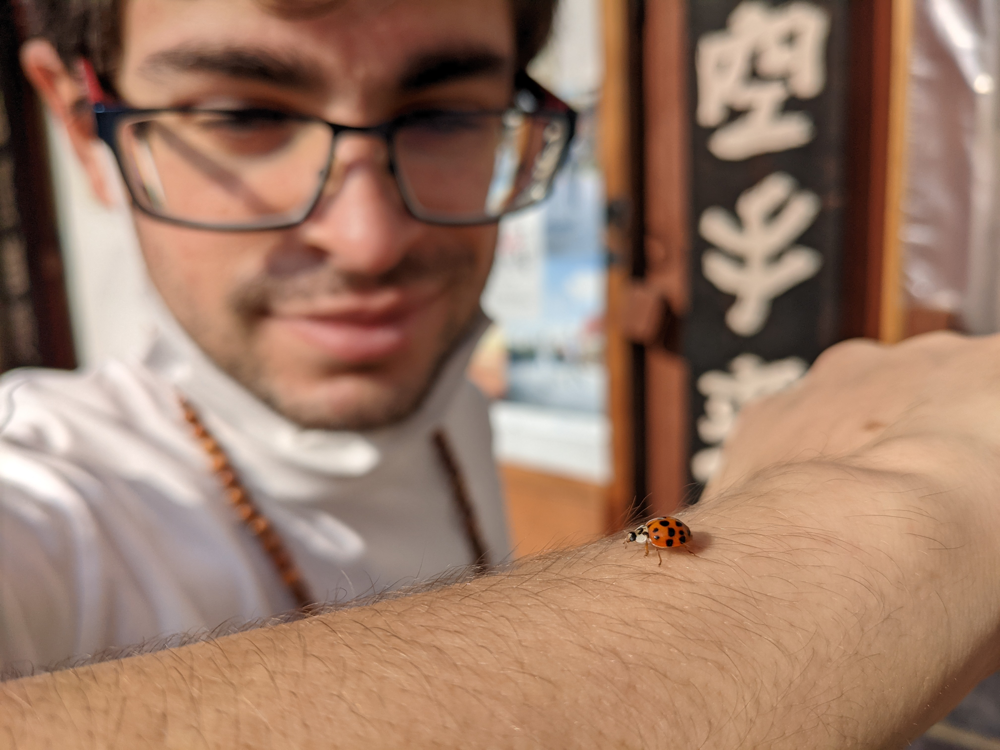

Josué Pérez Sabater
Webpage under development... Please be patient!
-
 Madrid, Spain
Madrid, Spain
-
 josu.ps13@gmail.com
josu.ps13@gmail.com
-
 Predoctoral Researcher at UC3M
Predoctoral Researcher at UC3M
About
Hi! I'm Josu. Biomedical engineer and PhD student, currently working as a researcher. I'm calm, meticulous, hard-working, and a decent programmer. I do my best to live consciously, mindful of others and the environment. I'm especially passionate about putting my skills at the service of the community and society. I enjoy reading, traveling, thinking things through, and also organizing stuff — sometimes a bit too much.
Please have a look around. If anything here resonates with you, or you think we could work on something together, feel free to reach out — I'd love to hear from you :).
Get to know me



Write a bit more about yourself here — hobbies, background, whatever you'd like people to know beyond the CV.